Portofolio of Yichi
The Air Quality Analysis of Cities in China

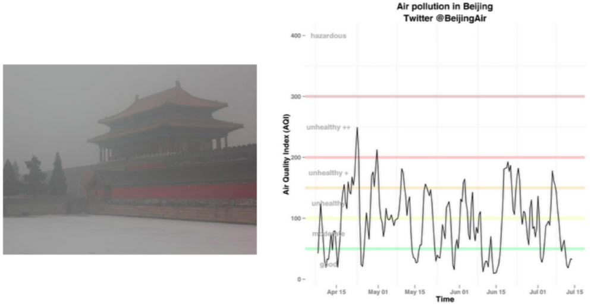
Pollution of Beijing
Background
Chinese economy has grown tenfold since 1978, however, this rapid growth brings great contamination to air and water, especially haze. A lot of kids and old people go to hospital because of the terrible air quality in Beijing and Shanghai. This kind of situation not only happens in large cities. More and more cities have been affected by haze, which makes it harder to control at the same time. In this project, we want to analyze the distribution of haze among different cities and provide useful information for related department in order to support them taking actions to deal with this huge problem.
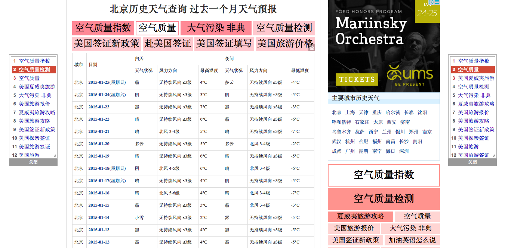
Sample of data source
Data Source
Skills: SearchOur group crawl data from http://www.tianqihoubao.com/aqi/. It concludes information in 174 cities from 34 provinces during Oct 2013 to April 2014. Data format was this: AQI, PM2.5, PM10, CO, NO2, SO2. One average data per element per city per day. PM2.5 reflects City traffic and combustion, and PM10 reflects Road dust and dust storms. PM2.5 is more harmful than PM10.
Section One
Skills: R
In this part, we scope on the relationships on proportion of PM2.5 and PM10 in AQI among all cities. AQI composition in some cities are similar to other cities while AQI composition in some cities are very different from other cities.
1. Data Preparation -
I firstly manipulate the data in Python. Read all the txt files in a file, select useful data, calculate average values by days, format the data and store it in one result.csv file. After manipulation, every city has average values for AQI, PM2.5 and PM10.
2. Method -
Here, I use R to further manipulate data. First of all, I scale the data. Second, calculate distance between data using average method since average linkage function is more comprehensive than minimum and maximum linkage function. Then, I generate different kinds of graphs to visualize information.
3. Result -
The most unique air quality composition cities among other cities are: shijiazhuang, kuerle, jiayuguan, wuhan. The most similar air quality composition cities among other cities are: weihai and yingkou, huhehaote and yinchuan and so on.
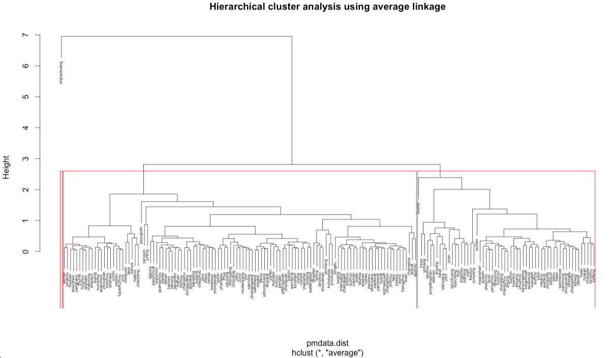
Hierarchical clustering analysis
In the Hierarchical cluster analysis using average linkage graph, the most similar cities of AQI composition are connected as a pair. As we can see from the dendrogram, Shijiazhuang is the most unique city in AQI composition. Kuerle, Jiayuguan and Wuhan are also special cities compared to other cities. Three red rectangles express the three clustering groups. Let us further analyze the situation based on some examples. The first left pair in this tree are Yingkou and Weihai, which means these two cities composition of AQI are very similar. After we zoom in the dataset and pick up exact data of Yingkou, Weihai and Shijiazhuang, a line chart can be generated as the left one.
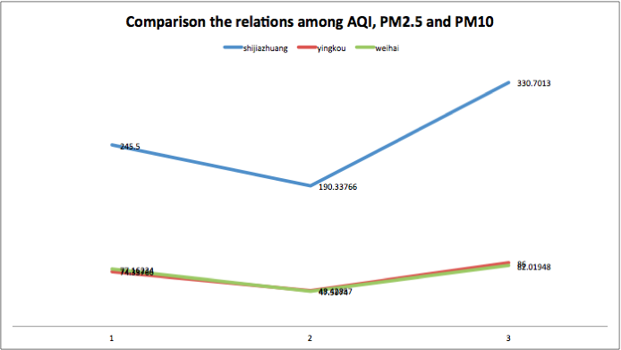
Comparison of Yingkou, Weihai and Shijiazhuang
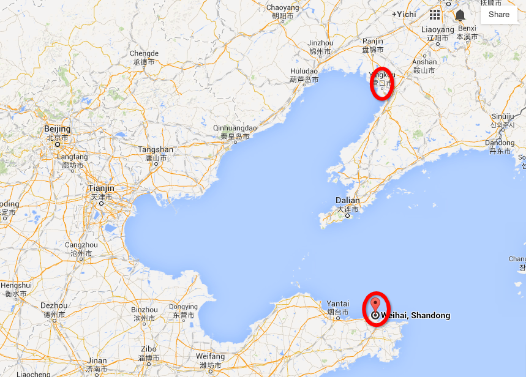
X-axis labels are AQI, PM2.5, PM10 in sequence. Y-axis represents the index values. The blue line represent Shijiazhuang, the red line represents Yingkou and the green line represents Weihai. Shijiazhuang has a fairly high AQI index values, in which PM10 takes up bigger proportion in AQI than PM2.5. The red line and the green line are almost overlap, their distance is really small. Not only their AQI index are similar, but most important is that their proportion of PM2.5 and PM10 are very close. This line chart actually validate the hierarchical cluster dendrogram.
If we step even further to see these real locations in the map below, we can find out that Yingkou and Weihai both are cities very near to Bohai Bay. Weathers near sea are often stable. Similar location types have high possibility to have similar air composition, then the quality indexes are convergent too.
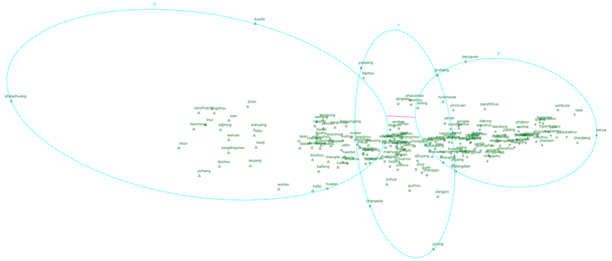
Kmeans clustering analysis
Above graph is the Kmeans clustering plot with 3 clusters. Shijiazhuang is the independent point at the most left edge. As we can see from this plot, even in one cluster group, distance among data can be very different. Also, sometimes there is no exact cut between dataset. Composition differences cannot be separated clearly, because data are always connect and correlate. There is no absolutely right distribution way, there will only have more suitable ways.
Section Two
Skills: R, Python
Find the trends of air quality among Chinese cities.
1. Data Preparation -
We firstly manipulate the data in Python too. Read all the cities txt files in a file, select PM2.5 data and all dates information, format the data and store it in one newresult.csv file. After manipulation, every city has hundreds of PM2.5 values in a long period of time from Oct 2013 to April 2014.
2. Method -
First, in R, because correlation are calculated based on column, we matrix transpose the dataset reading from newresult.tsv file to make sure that columns are cities. Next, we use pearson method to calculate correlations between this city and get a new matrix and store it in weightbetweencities.csv. We use a heatmap to visualize the correlation situations among cities to see which two cities have close correlation in PM2.5 throughout the time.
Second, in Python, take the correlation of trend of every two cities as relativity of these two areas. Then sum up this relativity as the weight to value which 10 cities are among the most influential cities among from the whole graph. Then linked city A to city B if city B is in A’s 10 most relevant cities. And then we can get the most influential cities among their neighbors.
It will be helpful if cities are classified into groups so that it will be easy to deal with pollution. Use K_clique_communities to divide the cities, in this case I set K as 5 and then get 8 cliques, and color them into different colors, so it is easy to distinguish them by colors. Also comparing the sum of correlation from the city and other cities in its clan, the most important city in this clique is chosen. Then color the important cities into red and other cities into white to enhance.
3. Result -
Below is the heatmap represents correlations of PM2.5 through time periods among cities. The xaxis and yaxis labels are all city names. Blue means positive correlation while red means negative correlation. The darker the color is, the higher correlation is. As it can be seen, cities have the most positive correlations with themselves. So there is a dark blue diagonal line in the graph. Cities near each other and under blue heat squares should be considered solve haze problem together, since they have closer correlations and affect each other heavier than other cities.
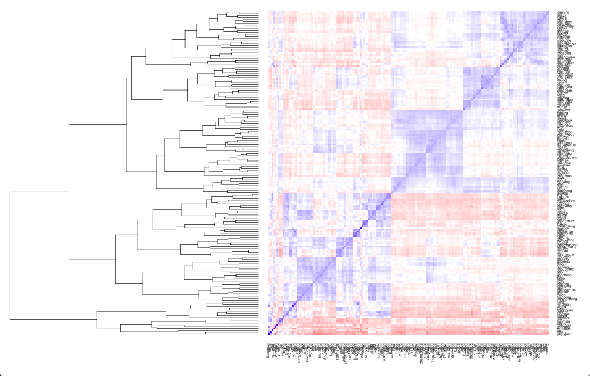
Heatmap analysis
The most influential cities among their neighbors are: changzhou, wuxi, , huizhou, jiangyin, jintan,jiaxing, zhaoyuan, weifang, laizhou, huzhou. The most influential cities from the whole graph are: yiwu, jinhua, fuyang, quzhou, zhuji, wuhu,jintan, nanjing, hangzhou,jurong.
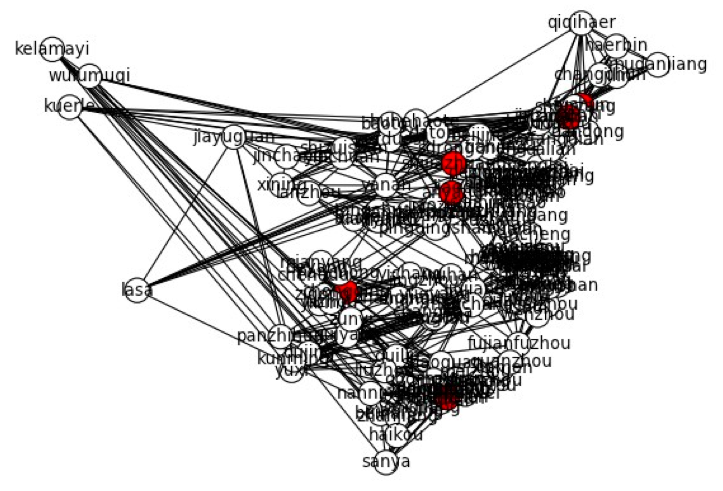
China map demo - The most influential cities in their clique: chongqing, anyang, fushun, anshan, shijiazhuang, shenzhen, wuxi. Some location details may have variances
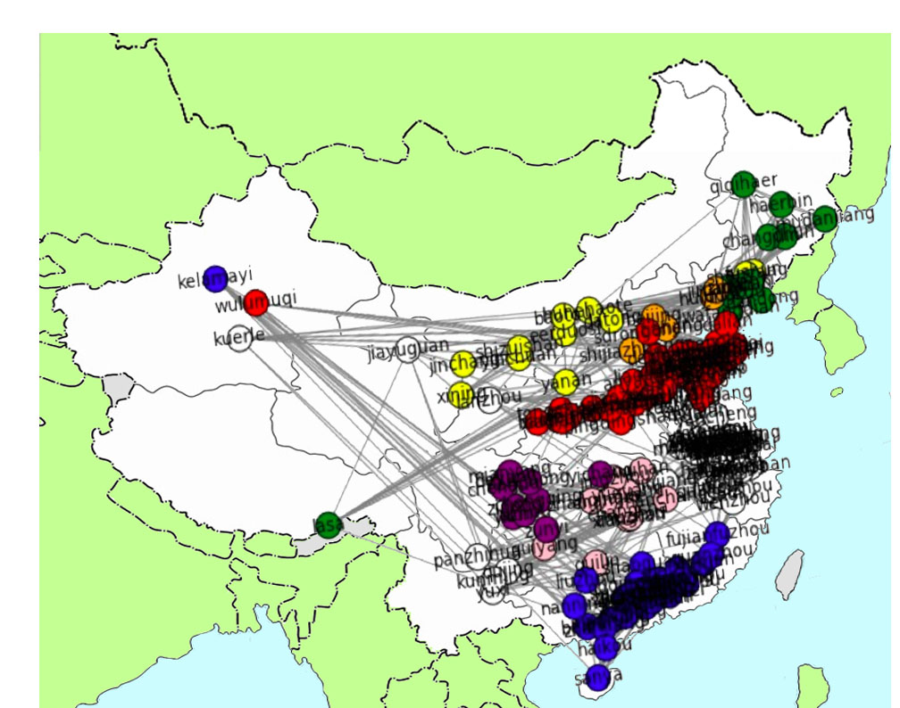
green->northeast; orange->hebei; red->east; pink->central; blue->south; white->southeast; yellow->northcentral; purple->sichuan.
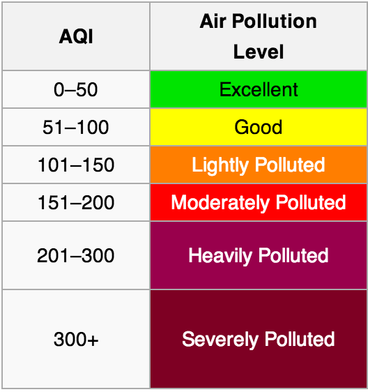
Legend
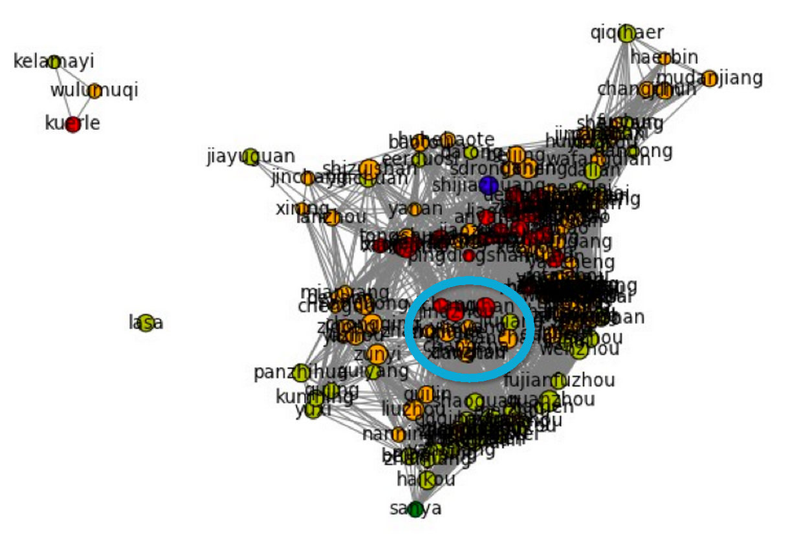
Betweenness
Pagerank
Section Three
Skills: Python
In this part, we try a different method to generate the network. The nodes are still the cities and we use color and size to show the level of pollution. The levels1 are listed left: (In our graph, we use green, yellow, orange, red, blue, white to show different levels.) We will connect cities with a certain distance. And correlation between cities we got from part one will be used to determine the weight of edges.
1. Data Preparation -
In order to get the distance between each two cities, we need the coordinates of each city. http://www.douban.com/group/topic/33918398/ is the data source for coordinates. We use it to generate a csv file “city_coord.csv”, which contains three columns “city”, “longitude” and “latitude”. Thus, we got the coordinates for all 174 cities.
2. Method -
Firstly, we use “city_coord.csv” to add nodes to the graph and set their coordinates and position so that when we draw the graph, the nodes (cities) will show as their actual geographical position. Then for each two cities, we calculate their euclidean distance. If the distance is smaller than 8 (a parameter we set, within which we assume that the air condition of a city can affect others), the edge will be added. At the same time, we also use “weightbetweencities.csv” generated from the first part to set the weight of the edge.
Secondly, we use “result.csv” from part one, which contains cities, average AQI, average PM2.5 and average PM10 of each city. Here we only take the average AQI to set the pollution status and size of the node. Then based on the air pollution level we listed above to set color. After doing that, we can draw the graph.
Then we calculate the betweenness and PageRank score for each node. Here a high PageRank score means the pollution condition of a city is more likely to be affected by other cities.
3. Result - From the left graph we can see that most of the cities in China are either lightly polluted or moderately polluted, and shijiazhuang is even heavily polluted. So efforts are really need to be made as soon as possible.
After checking the betweenness of each city, we found the following cities with highest betweenness: wuhan, jingzhou, jiujiang, yueyang, changsha, nanchang, changde, sanmenxia. They are all in the blue circle of the graph. They are all in the middle of China, which is in accordance with our common sense, because that part connects north and south, east and west of China. Cities within that area play an important role in spreading air pollution so the government should pay more attention to those cities.
Cities with highest PageRank scores means they are easily affected by other cities. So when the local governments in this area try to control the air pollution in the city, they should also pay attention to their neighbor cities.
There are cities with low PageRank but still highly polluted, which indicates that the cities themselves have severe air pollution. So the government really needs to give cities in this area high priority when it decides which cities to proceed treatment.
Conclusion and Future
From our project, we can get cognition that the air pollution is severe in most part of China, effort needs to be taken as soon as possible. While the government and researchers in related fields endeavor to solve the problem, our group also analyzes it from a perspective of network and we have found certain pattern in the air pollution condition of each city. We believe our analysis can help with planning and decision making in regards to air pollution control.
However, air pollution is not a problem that can be solved in one or two years, it needs both government and citizens make effort on it. Less firework for everyone may helps a lot to the air quality. In the future, we are going to acquire more related dataset from a wider data sources and validate them to see whether they are meaningful enough to be used. Then, we plan to provide different report packages for different cities, for example package for independent city shijiazhuang and package for high correlated central cities together. In each package, we are heading to write a story telling the readers what happens, why it happens, what are the current situations among each cities and your city in China, what you should care about and do to help improve the air quality in your home town. Everyone and every city has the responsibility to solve the air pollution. We hope more people will gain more knowledge of this haze problem in a more academic way and no one will complain about other cities’ effects but feel responsible for the whole country wide problem.